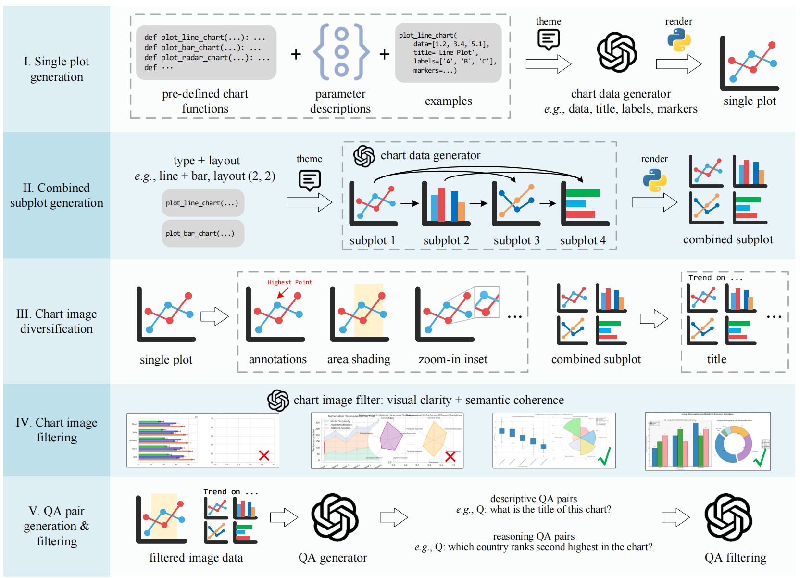
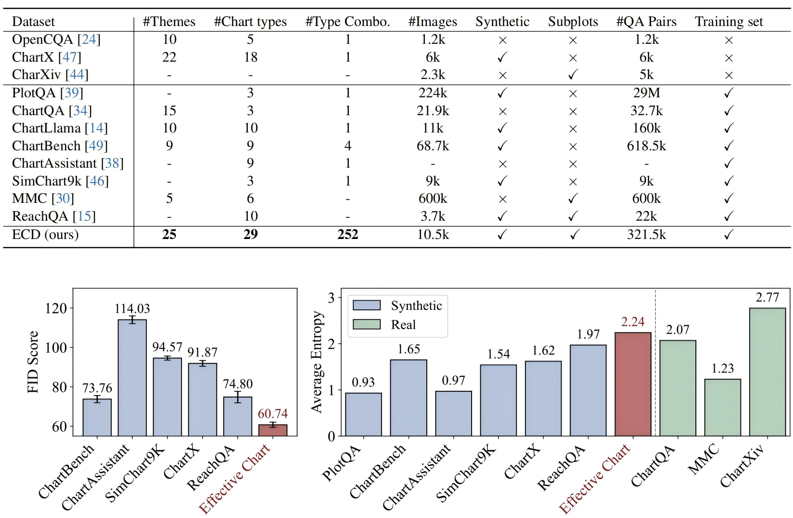
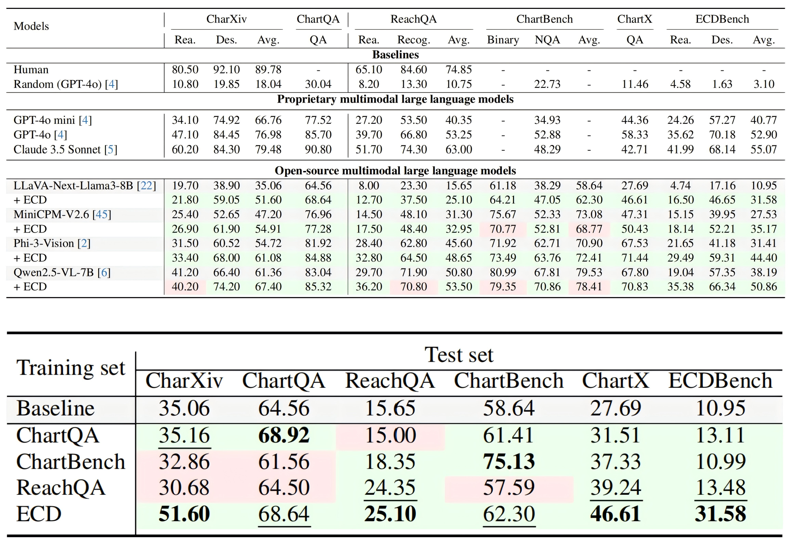

📊 Our Chart Generation Pipeline — Key Insights
-
1️⃣ Single plot generation – Create individual charts using predefined chart
functions
& a separate data generator for titles, labels, and markers.
2️⃣Combined subplot generation – Sequentially generate subplots where later plots
are
informed by earlier ones for semantic coherence.
3️⃣ Chart image diversification – Add annotations, shaded areas, zoom‑in insets,
font
tweaks, and axis style changes to increase realism.
4️⃣ Chart image filtering – Automatically filter out low‑quality charts using
visual
clarity & semantic coherence scores.
5️⃣ QA pair generation & filtering – Generate both descriptive & reasoning
questions per
chart, then apply additional quality filtering.
📊 Our Chart Generation Pipeline — Key Insights
-
1️⃣ Single plot generation – Create individual charts using predefined chart
functions
& a separate data generator for titles, labels, and markers.
2️⃣Combined subplot generation – Sequentially generate subplots where later plots are informed by earlier ones for semantic coherence.
3️⃣ Chart image diversification – Add annotations, shaded areas, zoom‑in insets, font tweaks, and axis style changes to increase realism.
4️⃣ Chart image filtering – Automatically filter out low‑quality charts using visual clarity & semantic coherence scores.
5️⃣ QA pair generation & filtering – Generate both descriptive & reasoning questions per chart, then apply additional quality filtering.

📊 Effective Chart Dataset (ECD) — Key Highlights
-
1️⃣ Diverse Features: ECD includes the most themes (25),
chart types (29)
and chart combinations (252), surpassing all other datasets in variety and
contextual coverage.
2️⃣ Data Realism: ECD achieves the lowest FID score compared to
other datasets, demonstrating
the strongest alignment with real-world scientific charts.
3️⃣ Higher Complexity: ECD outperforms other synthetic datasets in visual
complexity, measured by
average entropy of pixel values, making it closer to real-world scenarios.
📊 Effective Chart Dataset (ECD) — Key Highlights
-
1️⃣ Diverse Features: ECD includes the most themes (25),
chart types (29)
and chart combinations (252), surpassing all other datasets in variety and
contextual coverage.
2️⃣ Data Realism: ECD achieves the lowest FID score compared to other datasets, demonstrating the strongest alignment with real-world scientific charts.
3️⃣ Higher Complexity: ECD outperforms other synthetic datasets in visual complexity, measured by average entropy of pixel values, making it closer to real-world scenarios.

📊 Comparing with existing datasets
-
Compared to chart images in existing chart QA training datasets, such as PlotQA (3 types), ChartQA
(3 types), ChartBench (9 types), SimChart9k (3 types), ChartAssistant (9 types), and ReachQA (10
types), our ECD dataset demonstrates significantly greater diversity with 29 chart types and over
250 types of subplot combinations, while also exhibiting higher complexity in its design.
📊 Comparing with existing datasets
- Compared to chart images in existing chart QA training datasets, such as PlotQA (3 types), ChartQA (3 types), ChartBench (9 types), SimChart9k (3 types), ChartAssistant (9 types), and ReachQA (10 types), our ECD dataset demonstrates significantly greater diversity with 29 chart types and over 250 types of subplot combinations, while also exhibiting higher complexity in its design.

📊 Comparing MLLMs and Training Sets — Key Insights
-
1️⃣ MLLM Performance Comparison: Evaluations across six test sets. Fine-tuning on
ECD shows overall
improvements (highlighted in green) across four open-source
MLLMs.
2️⃣ Training Set Comparison: Fine-tuning LLaVA-Next-Llama3-8B on different training
sets, including ChartQA, ChartBench, ReachQA, and
ECD, reveals ECD achieves the best overall performance. Each column in the table
highlights the best result in bold and the second-best result
as underlined. Performance growth is marked in green,
while declines are marked in red.
📊 Comparing MLLMs and Training Sets — Key Insights
-
1️⃣ MLLM Performance Comparison: Evaluations across six test sets. Fine-tuning on
ECD shows overall
improvements (highlighted in green) across four open-source
MLLMs.
2️⃣ Training Set Comparison: Fine-tuning LLaVA-Next-Llama3-8B on different training sets, including ChartQA, ChartBench, ReachQA, and ECD, reveals ECD achieves the best overall performance. Each column in the table highlights the best result in bold and the second-best result as underlined. Performance growth is marked in green, while declines are marked in red.